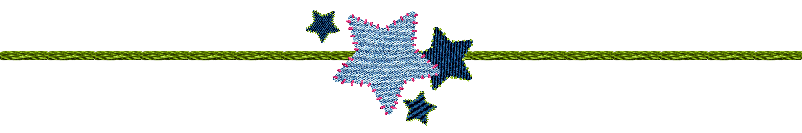

Home
Commission form
Our process
Customer testimonials
Our textile designer Jessica upcycled textiles that she thrifts or gets secondhand to rework old jeans. The base materials of all our designs are your old jeans. We rework and refashion them using these old materials to create fashionable and sustainable jeans that should last you a while yet.
Our jeans are customized according to Jessica’s unique aesthetic, which taps into natural, earthy vibes with earthy tones and floral textiles. Jessica customizes your jeans according to what cuts and changes you want to see, creating trendy pieces that you can love and wear again.
We include NFC tags in every piece we create with sustainability information custom to your rewoven jeans. In each NFC tag, you can find how much water you’ve saved, how much parts per million of CO2 you reduced, and how many textiles you saved from going to the landfill.
Our packaging materials are sustainable and custom. We custom make our own jean tags and custom print our own stickers. We use thread secondhand thread and newspapers to create a custom experience that is both sustainable and protects your jeans.
=======Our textile designer Jessica upcycled textiles that she thrifts or gets secondhand to rework old jeans. The base materials of all our designs are your old jeans. We rework and refashion them using these old materials to create fashionable and sustainable jeans that should last you a while yet.
Our jeans are customized according to Jessica’s unique aesthetic, which taps into natural, earthy vibes with earthy tones and floral textiles. Jessica customizes your jeans according to what cuts and changes you want to see, creating trendy pieces that you can love and wear again.
We include NFC tags in every piece we create with sustainability information custom to your rewoven jeans. In each NFC tag, you can find how much water you’ve saved, how much parts per million of CO2 you reduced, and how many textiles you saved from going to the landfill.
Our packaging materials are sustainable and custom. We custom make our own jean tags and custom print our own stickers. We use thread secondhand thread and newspapers to create a custom experience that is both sustainable and protects your jeans.
>>>>>>> 44deffd5f60c4a56c04ce8d357501fed3c6b5c69